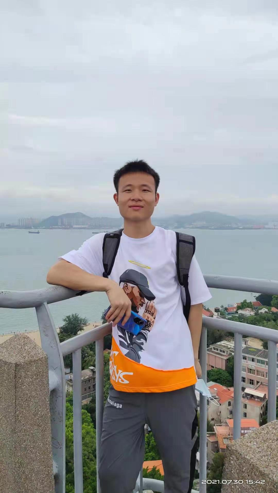

- English || 中文
- 生活照
- 返回


个人简介
- 专业能力：熟练掌握Pycharm软件（Python编程）、VS code软件（C/C++编程）、keil软件（STM32编程）、CSS/HTML/JavaScript编程、了解Pytorch → ONNX部署，熟悉Linux操作系统、大数据分析、数据可视化等；
- 技能证书：全国计算机等级考试证书（二级C语言、三级嵌入式）、人工智能训练师三级职业证书、英语CET4、机动车驾驶证等，熟练掌握Word、Excel、PowerPoint、Visio等办公软件；
- 综合能力：在校期间专业成绩优秀，获国家级荣誉三项（全国大学生电子设计竞赛二等奖、中国智能机器人格斗大赛国家二等奖、“华为杯”研究生数学建模全国三等奖），省部级荣誉两项（省级优秀毕业生、国家励志奖学金），校级荣誉包括上海海事大学优秀学生、研究生一等奖学金、优秀志愿者、优秀共青团干部、优秀学生党支部书记等若干，党支部任职期间，开展活动10余次，组织会议100余项，具有良好的组织策划、团队协作和人际交往能力。
教育经历
- 湖南文理学院 自动化 GPA：3.86\4
- 上海海事大学 控制科学与工程专业 GPA：GPA：3.81\4
- 本科成绩单 September 2017 - June 2021
- 硕士成绩单 September 2021 - June 2024


工作经历
- 深圳市讯恒三维科技有限公司，C++算法工程师，2024.7-至今
- 口扫设备标志杆设计与算法开发 设计了15个口扫标志杆，涵盖75个不同平面，利用聚类算法与点线集合关系，准确识别每个平面ID与标志杆ID。
- 手持激光扫描仪关键技术研发 利用图相关算法优化光条匹配激光条纹，提升线激光的匹配成功率，提高点云生成率、降低错误点云生成。
- 网格锐化算法 通过查阅论文并借助OPENMESH开源库验证方法可行性，最终使用CUDA并行加速，提升处理速度近20倍，同时保持锐化效果与时间成本的平衡。
- 网格重建算法优化与适配 针对公司设备，优化泊松重建算法，改进法线计算、曲率抽样与泊松重建加速，成功实现可调分辨率，满足项目需求。
- 点云去噪 改善MRPCA算法，利用cuda实现该算法加速，对点云进行去噪，可以较好去掉飞点，使点云变薄，大幅提升封装质量。实现自适应曲率下采样，可有效提升封装速度和减少内存消耗
- 三维网格生成 改善TSDF算法，使算法兼顾封装质量与封装速度，可以较好提高封装速度和质量。
• 工作内容：
科研成果
- ship visual trajectory exploitation via an ensemble instance segmentation framework(导师一作，本人二作，ocean-engineering，SCI二区)
- 融合图卷积神经网络与循环注意力机制的船舶航迹预测[J].中国航海,2025,48(03):41-48+64.（导师一作，本人二作，核心期刊已录用）
- High-fidelity ship imaging trajectory extraction via an instance segmentation model（导师一作，本人二作，EI检索，ISSI2022）
- 发明专利_一种面向视觉特征非连续性干扰的船舶图像航迹提取方法（导师一作，本人二作，专利号：202211000946.9）
- 物联网技术在智能水产养殖系统中的应用，湖南文理学院学报（自然科学学报版）
部分项目成果展示
- 基于实例分割方法的高精度船舶图像航迹提取研究
• 项目内容：使用船舶监控视频和PyTorch框架，结合实例目标检测算法（如YOLOX和CenterNet）、分割算法（如DeepSnake）和多目标跟踪算法（如Bytetrack），实现了船舶的运动跟踪和轨迹提取，MOTA（多目标跟踪精度）为0.925。
• 项目成果：获得一项国际专利授权、投稿一篇SCI论文、受邀参加 ISSI 国际学术会议并作报告。
- 物联网技术在智能水产养殖系统中的应用
• 项目内容：设计了一个智能水产养殖系统，通过微信小程序端实现对鱼塘的换水、增氧和投食进行控制，并能够查看鱼塘的实时和历史水质信息。项目包括硬件设计(使用STM32最小系统板和电机控制电路)、底层软件设计(使用Keil编程)和微信小程序端的设计，最终实现了硬件端、服务器端和客户端之间的数据传输和互控功能。该项目需要用到ADC转换、IIC通讯、USART通讯、ESP8266WIFI通讯、步进电机控制、直流电机控制、微信小程序设计等系列知识。
• 项目成果：获得湖南文理学院优秀毕设和毕业论文，并在知网检索发表了一篇题为《物联网技术在智能水产养殖系统中的应用》的论文。
- 上海小零网络科技有限公司（算法实习生）
• 项目职责与内容：利用SyncNet模型（端到端的音唇同步网络）、Audio2Motion模型（语音到动作）、PostNet模型（语音到表情）、基于RAD-NeRF的渲染器(表情到人脸视频)，得到音频驱动的人脸唇形生成模型。
• 项目成果：处于更换人脸视频训练新数字人阶段阶段。
- 基于图卷积网络的船舶轨迹预测
• 项目职责与内容：利用PyTorch框架、图卷积网络（GCN）、循环注意力单元（RAN）和生成对抗网络（GAN），预测船舶AIS轨迹。通过构建综合模型，从海量AIS数据中提取关键特征，并准确预测船舶未来轨迹。
• 项目成果：撰写一篇关于船舶轨迹预测的研究论文，目前正在投稿CSCD期刊。
- 上海如朋网络科技有限公司(算法实习生)
• 工作内容：开发针对CAD图纸的目标识别算法，准确识别建筑图纸中的墙体、门、窗等目标。2.将CAD图纸转换为可缩放矢量图形(SVG)文件，以实现更高效的数据处理和展示。
• 工作职责：担任项目负责人，负责算法构思和实现，完成目标识别和矢量化任务。
• 具体实现：利用Python调用AotuCAD软件，将DWG文件转为公开DXF文件，利用几何特征匹配算法等完成简单墙体识别、并以此生成数据集，为复杂CAD图纸的识别做准备，将生成的数据集放入改进的算法中训练，以达到利用深度学习的方式获取建筑图纸的的墙体等目标并矢量化的目的。
• 工作成果：成功完成CAD图纸的矢量化，并在特定情况下实现了墙体目标的准确识别。
竞赛与奖项
- 上海海事大学优秀毕业生(公示已出)
- 优秀学生支部党支书
- “华为杯”研究生数学建模，三等奖. 2023.12 国家级，教育部
- 研究生学业奖学金一等奖，2021-2022，2022-2023
- 上海海事大学三好积极分子
- 上海海事大学优秀学生
- 研究生新生二等奖学金2021-2022
- 湖南省优秀毕业生，2021.5 省级，湖南省教育厅
- 中国智能机器人格斗大赛，二等奖.2019,国家级，中国人工智能学会
- 全国大学生电子设计竞赛全国，二等奖.2019,国家级，全国大学生电子设计竞赛组织委员会
- 国家励志奖学金,，2018，省级，湖南省教育厅
- 甲等奖学金两次(2017-2018, 2018-1019)
- 乙等奖学金(2019-2020)
- 优秀共青团员
- 优秀共青团干部(2019-2020)
- 湖南文理学院物理竞赛二等奖
- 湖南文理学院智能导航大赛三等奖
- 校三好学生、校优秀志愿者多次


.PicsFolder.jpeg)


.PicsFolder.jpeg.jpeg)

专业技能
Languages
- Python、AI算法（人工智能训练师三级）、Pytorch、ONNX
- C（二级优秀）、C++、嵌入式（三级）、STM32
- HTML、CSS、JavaScript
- CET-4
Software
- PyCharm/VScode
- Keil
- Visio、Office
- AutoCAD